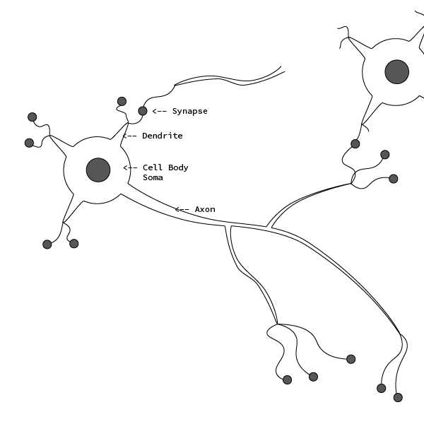
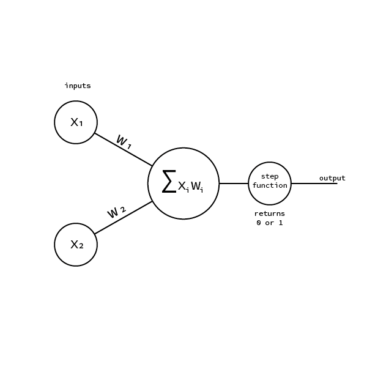
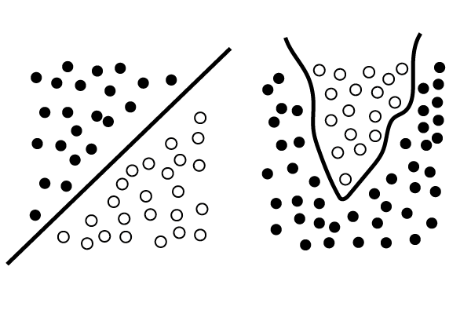
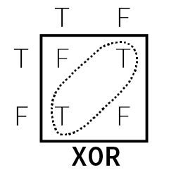
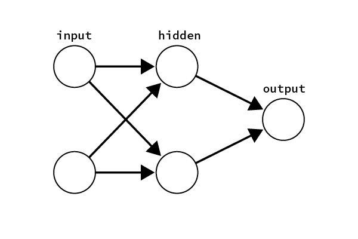

Semi serious attempt to understand the core concepts of Machine Learning
What is a PERCEPTRON
A perceptron is an artificial neuron, it was developed between the 50’s and 60’s by the scientist Frank Rosenblatt. But before we start to describe how an artificial neuron works it is worth to understand how our biological neurons operate.“The biological neuron is a nerve cell that provides the fundamental functional unit for the nervous system of all animals” [1]
That said how does it really work?
Before getting into the functionalities let’s see how a neuron is made. Every neuron is composed by a cell body called soma. The soma itself is attached to many dendrites but to only one axon. (Fig. 1) The Axon is a very long fiber that eventually branches to connect to other neurons. The connection between the axon and the neuron is composed by two parts: the synapse and the dendrite. The synapse process the impulse from the axon and transmits it to the dendrite that will deliver the impulse to the soma or cell body. The soma reads an interprets the information carried by the impulse and sends a new impulse to the axon. This procedure goes on and on endlessly. Neurons basically communicate each other via electro-chemical impulses. The impulse to proceed from one neuron to the other must
“be strong enough to activate the the release of chemicals across a synaptic cleft.“ [2]The impulse must surpass a the threshold of the synapses otherwise the chemicals will not be released.
How does an artificial neuron work?
As already said at the end of the 50’s Frank Rosenblatt developed the first artificial neuron modeled onto the biological one: the perceptron. The perceptron is a linear model for binary classification. It takes some inputs, those inputs are than processed with dot product between themselves and the weights. The result is than fed to the step function that returns 0 or 1. The nature of the output gives the perceptron the possibility to learn to classify between two distinct states. This means that it is a linear classifier, it can classify things that in a graph can be separated by a line.(???) Before we deepen into the mathematical and algorithmic concepts regarding the perceptron it is worth to describe what the weights are. The weights were introduced by Rosenblatt in his perceptron model. Those numbers express
“the importance of the respective inputs to the output.” [3]Therefore the weights define which input is more important in order to get a desired output. The whole purpose of machine learning is to tune the weights of artificial neurons, so that given a set of inputs the neuron will output a correct answer. It is important to make clear how important it is to understand the role of the weights. If we look again at the fig. 2 we see a perceptron. Let’s assume this perceptron can classify whether an animal is a dog or a cat given two inputs value like size and sound/pitch (assuming that is possible to encode sound in a unique number). The value of the weights determines the output. In the case of the dog the weights favor the size as a cat has always lower size while cats weights favor the pitch as cats have an higher pitch than dogs. Of course chiwawas might be confused as dogs. But this because we would need much more inputs to really classify between the two species.
How does the weights tuning happen?
One of the methodologies for tuning the weights is with the method of supervised learning. Here there is an great explanation by Daniel ShiffmanWith this method[supervised learning], the network is provided with inputs for which there is a known answer. This way the network can find out if it has made a correct guess. If it’s incorrect, the network can learn from its mistake and adjust its weights. The process is as follows:Let’s dig into the mechanics of the perceptron. The first thing to understand is this formula, the dot product:
- Provide the perceptron with inputs for which there is a known answer.
- Ask the perceptron to guess an answer.
- Compute the error. (Did it get the answer right or wrong?)
- Adjust all the weights according to the error.
- Return to Step 1 and repeat! [4]
$$\sum_{i=1}^{n} x_{i} w_{i} $$
Given a perceptron with 5 inputs the result of the dot product will be
w_{1}x_{1}+w_{2}x_{2}+w_{3}x_{3}...+w_{5}x_{5}
And here the
JavaScript implementation
The the result of the dot product is the sum of the product of each input with its own weight. There is an important thing to add: the bias. As you can see above the we are dealing with a sum of products. Therefore if we have an input value equal to 0 it will always return 0. To avoid that we insert a third input called the bias that we set to 1.

On the the other hand the step function will look like this
And here the
JavaScript implementation
Therefore if the result of the dot product is greater or equal than 0 the result will be 1 otherwise it will be 0.
So far so good, now we need the last piece, a way to train our perceptron. To do this we will teach the the artificial neuron to learn from his errors with the following formula:
\Delta W = error \times x_{i}
And here the
JavaScript implementation
As already mentioned the perceptron is good in classifying linearly separable problems. Than lets consider a very simple situation where we have a two-dimensional space separated by a wall and we want our perceptron to be able to classify if the a random point placed in the space is either on one side or on the other.
First we need to build our perceptron.
The
Trainer class will help us in classifying data and labeling it
The first thing to do will be to create a linear function like this one
this will separate the canvas into two parts. Than we create our data-set with labels with the following code
And here is our perceptron classifying if a dot is on one side or the other of the line
If you visualize the perceptron you can see that after enough training the weights will stabilize. When this point is reached the perceptron is trained and will always recognize if a point is above or below the line.
If you made it until here than tap on your shoulder, you understood how a perceptron works!
Neural Networks
We already mentioned that a a single perceptron can ony solve linearly separable problems. But what does it mean?
Let's look at the image below:

The image shows two data-sets, the one on the left is linearly separable, similar to our experiment above. The data-set on the right shows data that is not linearly separable. Linearly separable data-sets are ones where it is possible to separate the data with a straight line, or a plane in a three dimensional dataset. However if the data is distributed like in the example on the right side than it is not linearly separable anymore, and therefore a perceptron will not be able to solve such a problem. A famous non linearly separable problem is the XOR truth table.

The XOR logical operator returns true if one of the two elements is false, and returns false if they are both either true or false. It is impossible to draw a single line that separates the true from the false, therefore one perceptron can't solve such a problem. To do so we need multi-layered perceptron, a network of many perceptrons.
